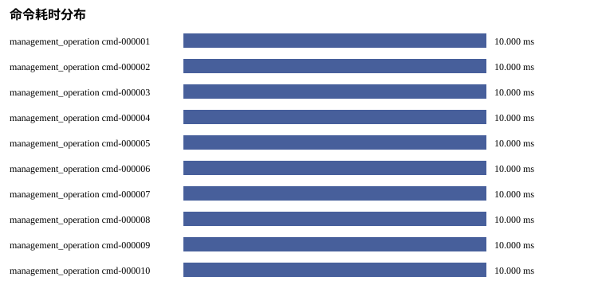
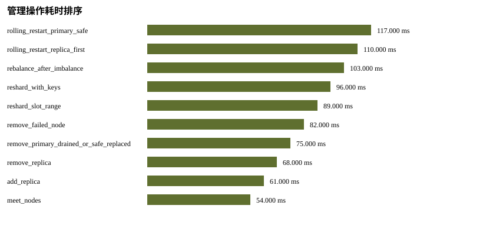
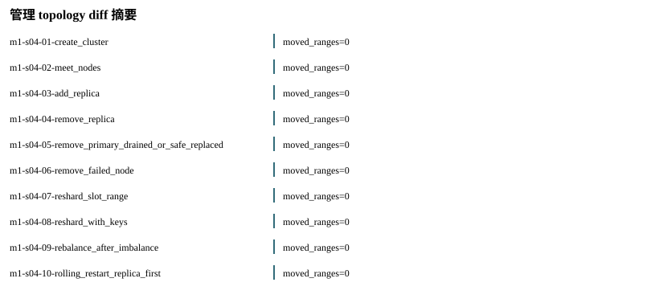
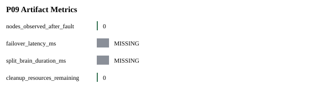

Status: PASS
Source phase: M1-S04
| 字段 | 值 |
|---|---|
| run_id | m1-s04-local |
| created_at | 2026-07-08T15:07:19Z |
| git_sha | bf111fe6b916ee21d92df1a44c310c54f8bf3fd1 |
| valkey_version | MISSING: Valkey endpoints were not probed while creating run metadata. |
| artifact_root | runs/m1-s04-local/artifacts |
| Name | Status |
|---|---|
| source_phase | PASS |
| real_valkey_evidence | BLOCKED_WITH_REASON |
| failover | SKIPPED_WITH_REASON |
| cleanup | PASS |
| setup_telemetry | SKIPPED_WITH_REASON |
| command_audit | PASS |
| management_ops | PASS |
| 指标 | 状态 | 原因 |
|---|---|---|
| none | ||

| 阶段指标 | 耗时 ms |
|---|---|
| SKIPPED_WITH_REASON: 无可排序的阶段耗时 | |
| 节点 | ready ms | 角色 | 状态 |
|---|---|---|---|
| SKIPPED_WITH_REASON: 无慢节点样本 | |||

| 命令 | 操作 | 类型 | 耗时 ms | 状态 |
|---|---|---|---|---|
| cmd-000001 | m1-s04-01-create_cluster | management_operation | 10.0 | PASS |
| cmd-000002 | m1-s04-02-meet_nodes | management_operation | 10.0 | PASS |
| cmd-000003 | m1-s04-03-add_replica | management_operation | 10.0 | PASS |
| cmd-000004 | m1-s04-04-remove_replica | management_operation | 10.0 | PASS |
| cmd-000005 | m1-s04-05-remove_primary_drained_or_safe_replaced | management_operation | 10.0 | PASS |
| cmd-000006 | m1-s04-06-remove_failed_node | management_operation | 10.0 | PASS |
| cmd-000007 | m1-s04-07-reshard_slot_range | management_operation | 10.0 | PASS |
| cmd-000008 | m1-s04-08-reshard_with_keys | management_operation | 10.0 | PASS |
| cmd-000009 | m1-s04-09-rebalance_after_imbalance | management_operation | 10.0 | PASS |
| cmd-000010 | m1-s04-10-rolling_restart_replica_first | management_operation | 10.0 | PASS |
| 命令 | 操作 | 类型 | 耗时 ms | 状态 |
|---|---|---|---|---|
| none | ||||
| 命令 | 操作 | 类型 | 耗时 ms | 状态 |
|---|---|---|---|---|
| none | ||||
| 命令类型 | 数量 |
|---|---|
| management_operation | 11 |

| 操作 | 耗时 ms | 状态 | 命令数 |
|---|---|---|---|
| rolling_restart_primary_safe | 117.0 | PASS | 1 |
| rolling_restart_replica_first | 110.0 | PASS | 1 |
| rebalance_after_imbalance | 103.0 | PASS | 1 |
| reshard_with_keys | 96.0 | PASS | 1 |
| reshard_slot_range | 89.0 | PASS | 1 |
| remove_failed_node | 82.0 | PASS | 1 |
| remove_primary_drained_or_safe_replaced | 75.0 | PASS | 1 |
| remove_replica | 68.0 | PASS | 1 |
| add_replica | 61.0 | PASS | 1 |
| meet_nodes | 54.0 | PASS | 1 |

| 操作 | known_nodes_delta | moved_slot_ranges | 状态 |
|---|---|---|---|
| m1-s04-01-create_cluster | 0 | 0 | PASS |
| m1-s04-02-meet_nodes | 0 | 0 | PASS |
| m1-s04-03-add_replica | 0 | 0 | PASS |
| m1-s04-04-remove_replica | 0 | 0 | PASS |
| m1-s04-05-remove_primary_drained_or_safe_replaced | 0 | 0 | PASS |
| m1-s04-06-remove_failed_node | 0 | 0 | PASS |
| m1-s04-07-reshard_slot_range | 0 | 0 | PASS |
| m1-s04-08-reshard_with_keys | 0 | 0 | PASS |
| m1-s04-09-rebalance_after_imbalance | 0 | 0 | PASS |
| m1-s04-10-rolling_restart_replica_first | 0 | 0 | PASS |
